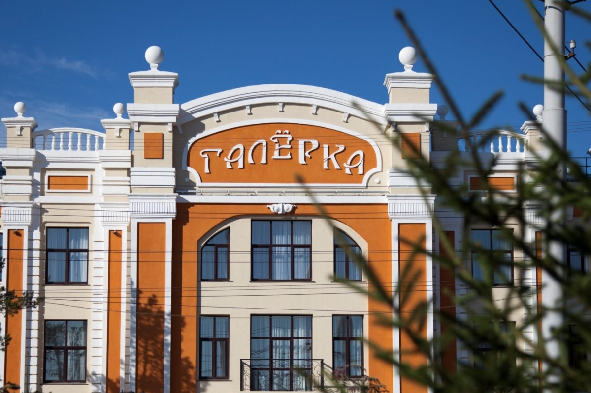
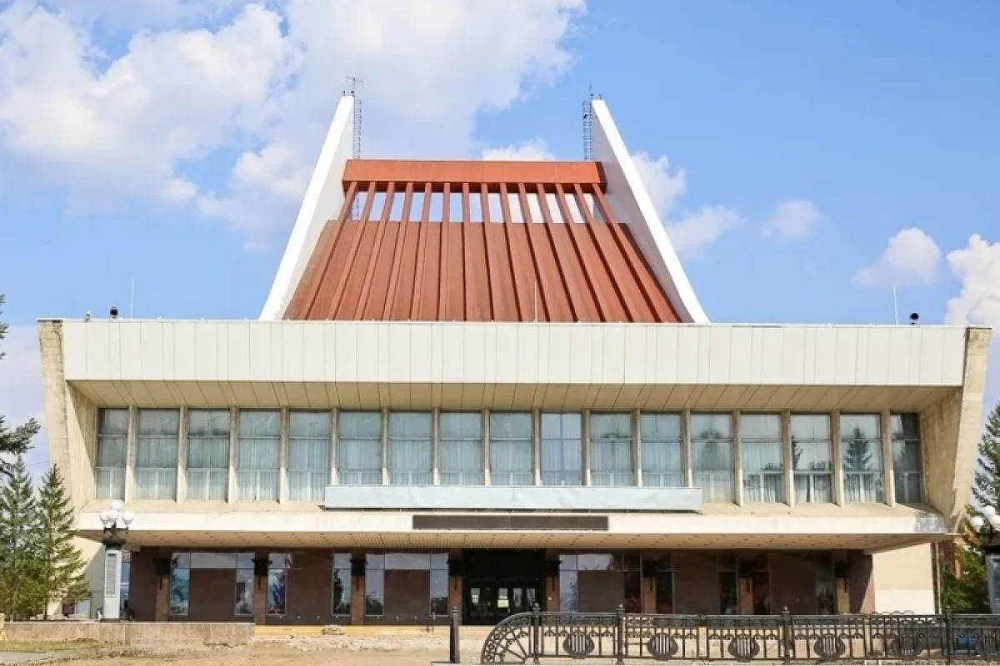
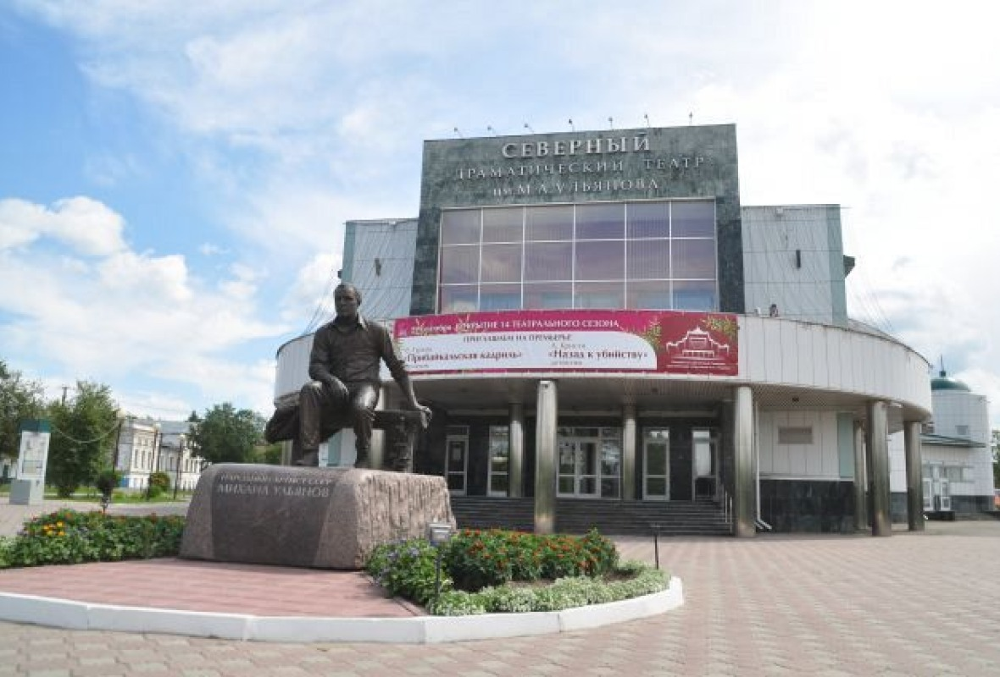
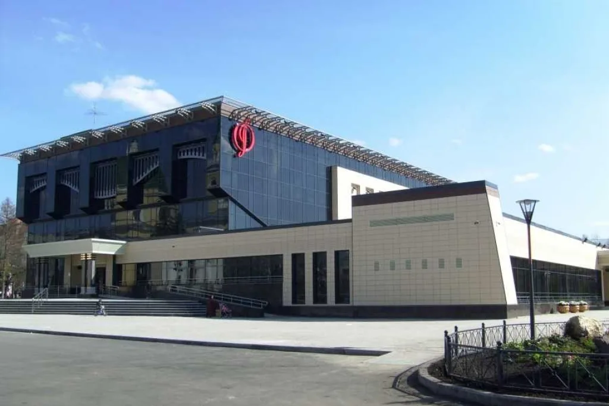
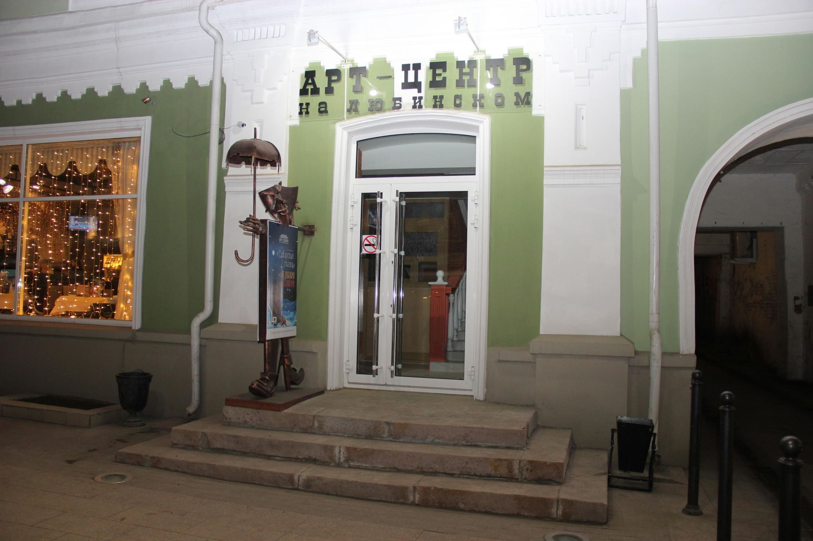
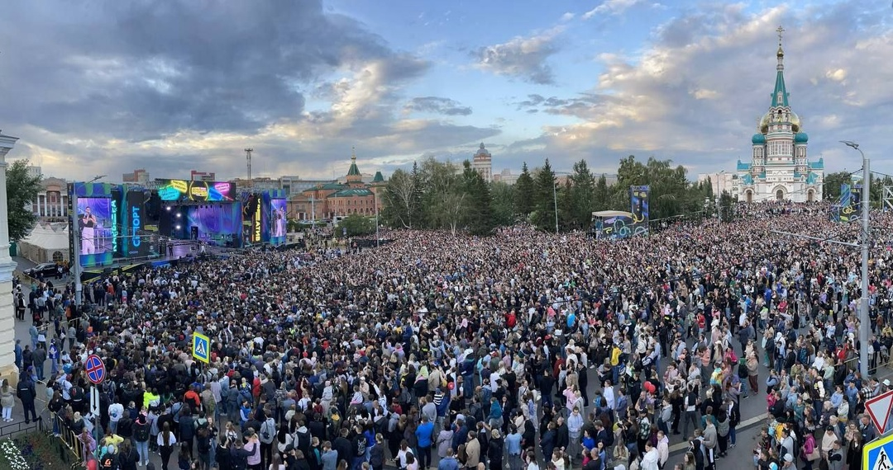
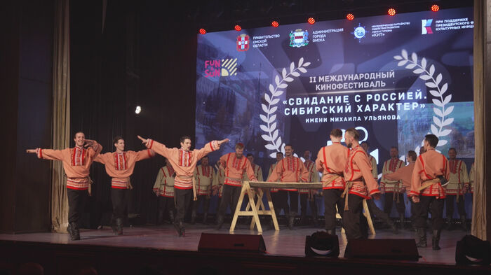
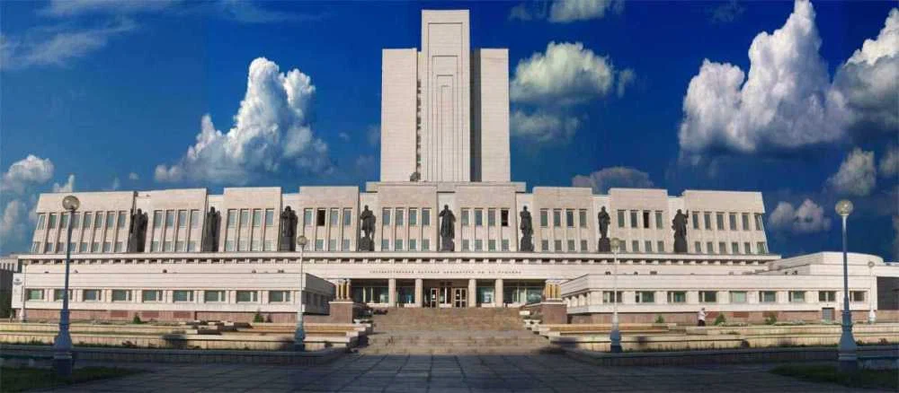
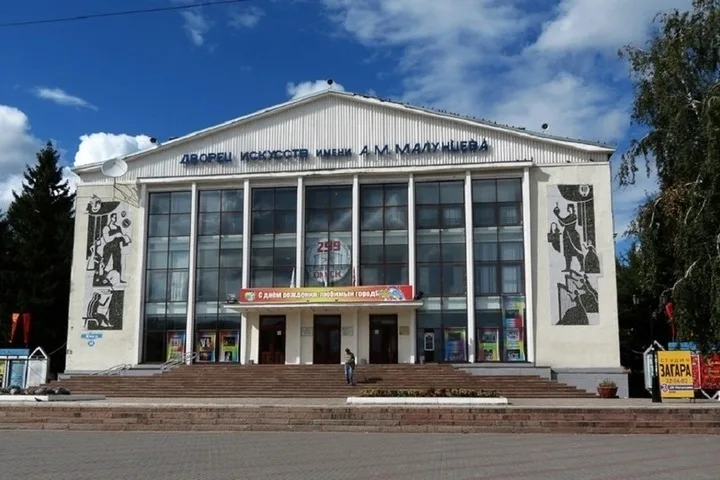

Театры города Омска

Омский драматический театр «Галёрка»

Омский государственный музыкальный театр

Омский государственный Северный драматический театр
Концертные площадки

Концертный зал Омской филармонии

Арт-центр на Любинском
Фестивали и культурные события

Фестиваль Молодёжи Омска

Омский международный кинофестиваль
Библиотеки и культурные центры

Омская областная библиотека имени А.С. Пушкина

Дом Культуры "Современник"